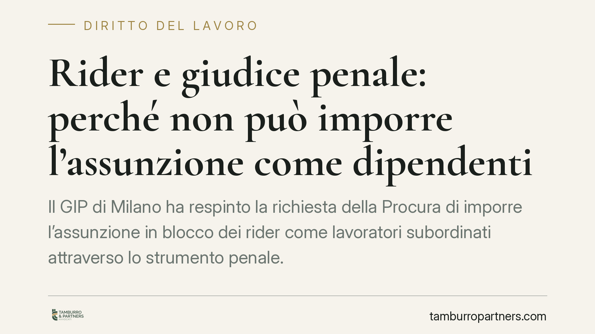

Rider e giudice penale: perché non può imporre l'assunzione come dipendenti
Il GIP di Milano ha respinto la richiesta della Procura di imporre l'assunzione in blocco dei rider come lavoratori subordinati attraverso lo strumento penale. La decisione tiene fermi due piani distinti: la repressione dello sfruttamento, che è materia penale, e la qualificazione del rapporto di lavoro, che spetta caso per caso al giudice civile. Una distinzione che orienta strategie processuali e scelte organizzative.

Il caso
La Procura di Milano aveva chiesto di utilizzare lo strumento del controllo giudiziario in sede penale per ottenere l'assunzione in blocco dei rider di una piattaforma di consegne come lavoratori subordinati. Il Giudice per le indagini preliminari del Tribunale di Milano ha respinto la richiesta.
Il provvedimento, diffuso attraverso la stampa specializzata nel settembre 2026, non risulta al momento pubblicato in forma integrale con i relativi estremi di procedimento: il lettore che intenda verificarne il testo dovrà attendere il deposito ufficiale. Le considerazioni che seguono muovono dalla ricostruzione resa nota e dal quadro normativo applicabile.
Il punto centrale è netto: reprimere lo sfruttamento non equivale a riqualificare il rapporto di lavoro. Sono operazioni diverse, con presupposti diversi e affidate a giudici diversi.
Inquadramento normativo
Sul versante penale, la contestazione tipica in questi contesti è quella dell'articolo 603-bis del codice penale, che punisce l'intermediazione illecita e lo sfruttamento del lavoro (il cosiddetto "caporalato"). La norma colpisce chi recluta o impiega manodopera in condizioni di sfruttamento, approfittando dello stato di bisogno dei lavoratori. Tra gli indici di sfruttamento rileva la violazione delle norme sulla retribuzione, che trova copertura costituzionale nell'articolo 36 della Costituzione: la retribuzione deve essere proporzionata alla quantità e qualità del lavoro e comunque sufficiente a un'esistenza libera e dignitosa.
Sul versante giuslavoristico, la qualificazione del rapporto passa per l'articolo 2094 del codice civile, che definisce il lavoratore subordinato come colui che si obbliga a collaborare nell'impresa alle dipendenze e sotto la direzione dell'imprenditore. Accanto ad esso opera l'articolo 2 del d.lgs. 81/2015, sulle collaborazioni etero-organizzate. Va segnalata la sua evoluzione: la riforma del 2019 (d.l. 101/2019, convertito nella legge 128/2019) ha ampliato la portata della norma, eliminando i previgenti requisiti relativi ai "tempi e luogo" di lavoro. Oggi la disciplina della subordinazione si applica anche quando le modalità di esecuzione sono organizzate tramite piattaforma digitale. Restano fermi, sullo sfondo, l'articolo 41 della Costituzione, sulla libertà di iniziativa economica, e l'articolo 36 sopra richiamato.
Perché i due piani non si sovrappongono
La repressione penale mira a colpire condotte di sfruttamento e a garantire trattamenti minimi, non a trasformare in via automatica ogni collaboratore in dipendente. La qualificazione del rapporto richiede invece un accertamento individuale, che valuti le concrete modalità di svolgimento della prestazione. Non è un giudizio seriale: si fonda su elementi che possono variare da posizione a posizione.
Da qui il rifiuto del GIP di adoperare lo strumento penale come scorciatoia per una riqualificazione collettiva. Il giudice penale può intervenire sullo sfruttamento; la qualificazione del rapporto resta terreno del giudice del lavoro.
Implicazioni pratiche
Per i rider e per le organizzazioni sindacali, la decisione conferma l'esistenza di due binari distinti. Il primo è la denuncia penale, che consente di reprimere condizioni di sfruttamento e di ottenere tutela sul piano retributivo. Il secondo è il ricorso al giudice del lavoro, la sede propria per far accertare la natura subordinata del singolo rapporto e le tutele che ne derivano.
Per le piattaforme, il quadro non offre rassicurazioni di stabilità del modello: l'assenza di una riqualificazione automatica in sede penale non esclude affatto l'esito di contenziosi lavoristici individuali, dove l'articolo 2 del d.lgs. 81/2015 nella versione post-2019 può condurre all'applicazione della disciplina della subordinazione.
Cosa fare in concreto
- Distinguere gli obiettivi: la tutela contro lo sfruttamento e la richiesta di riqualificazione seguono strumenti processuali diversi e vanno impostate separatamente.
- Documentare le condizioni concrete della prestazione: orari, modalità di assegnazione degli ordini, sistemi di rating, penalità e livelli retributivi effettivi.
- Per far valere la natura subordinata, individuare la sede corretta nel giudice del lavoro, non nel procedimento penale.
- Conservare le comunicazioni con la piattaforma e i dati sui compensi, utili sia sul piano retributivo sia su quello qualificatorio.
- È opportuna una valutazione professionale del singolo caso prima di scegliere la strada processuale, perché l'esito dipende dagli elementi individuali del rapporto.
Disclaimer
Contributo informativo a cura di Tamburro & Partners Avvocati. Non costituisce parere legale.
Ogni storia di lavoro ha i suoi tempi.
Se gestisci HR e vuoi un confronto su contenzioso, ispezioni o licenziamenti, scrivi allo studio. Ti rispondiamo entro un giorno lavorativo.